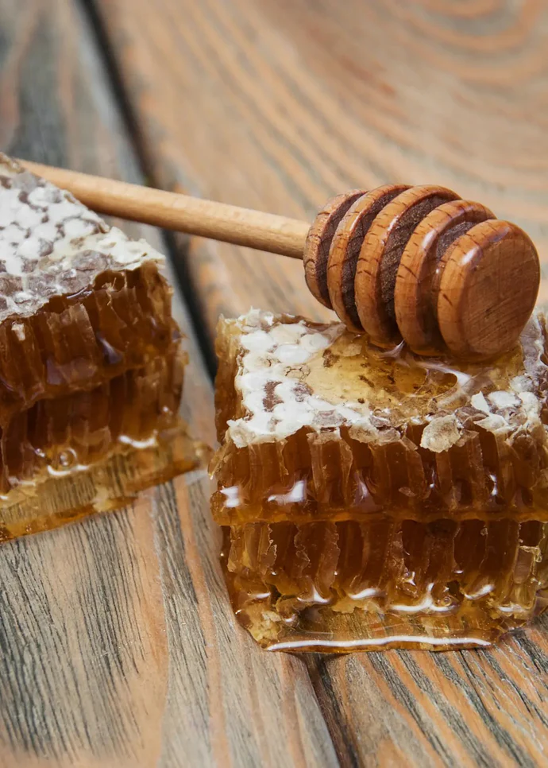
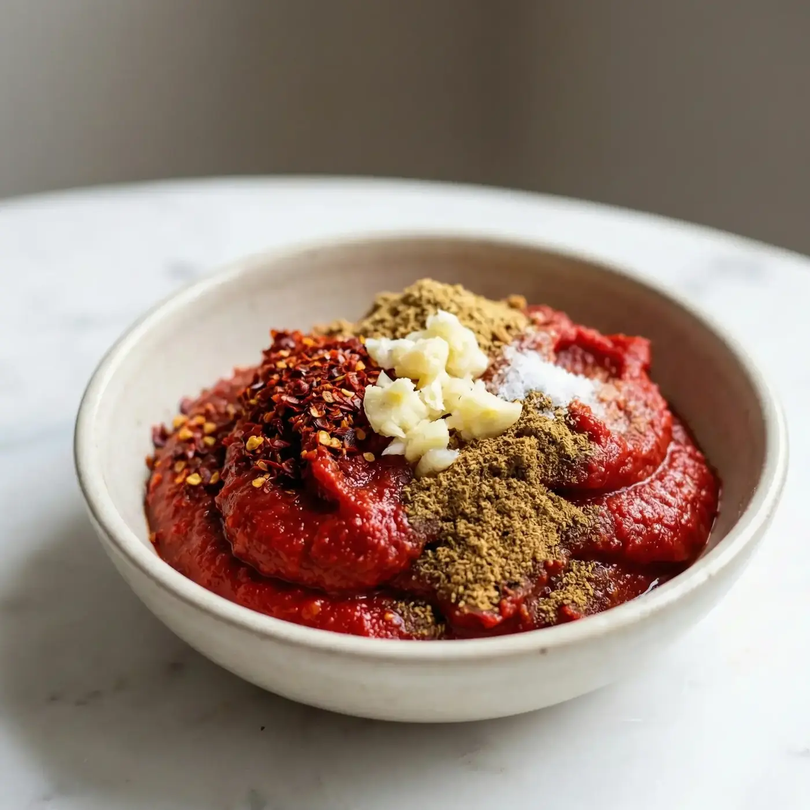
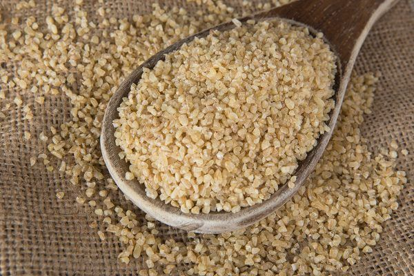
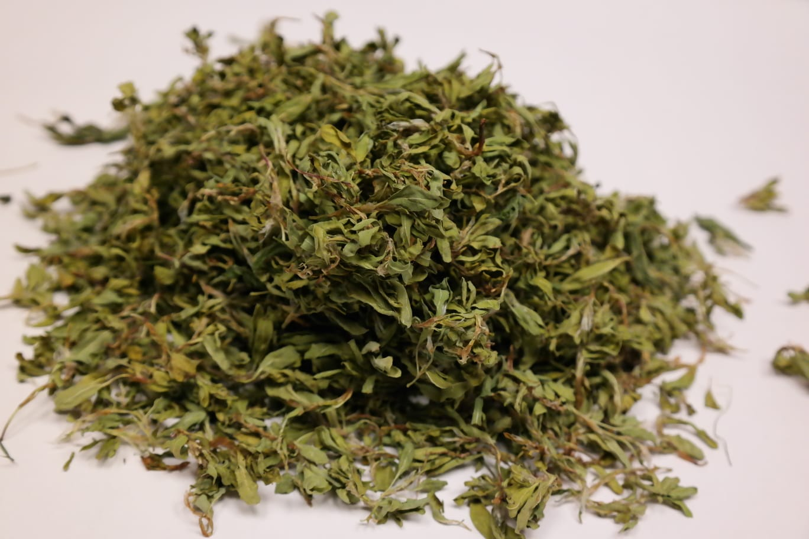

Sivas Yöresel Ürünleri

Sivas Balı(950gr)
Sivas yaylalarında üretilen, yoğun aromalı ve katkısız doğal çiçek balı.
₺600
Sivas Çemeni(225gr)
Çemen otu, sarımsak ve baharat karışımıyla hazırlanan, kahvaltı ve yemeklerde kullanılan yöresel lezzet.
₺200
Divriği Bulguru(1kg)
Sivas’ın verimli topraklarında yetişen buğdaydan üretilen, iri taneli ve doğal pilavlık bulgur.
₺100
Madımak Kurusu(100gr)
Sivas mutfağının sevilen otlarından madımağın kurutulmuş hali, geleneksel yemeklerde kullanılır.
₺360